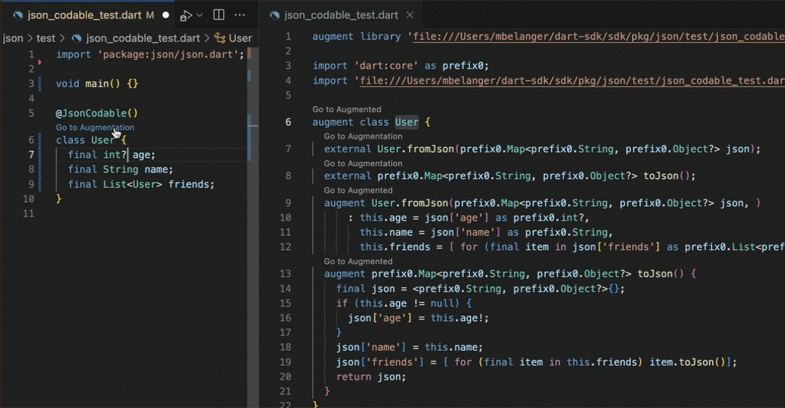

Macros (experimental)
The Dart macro system is a major new language feature currently under development which adds support for static meta-programming to the Dart language.
A Dart macro is a user-definable piece of code that takes in other code as parameters and operates on it in real-time to create, modify, or add declarations.
You can think about the macro system in two parts: using macros and writing macros. This page covers each (at a high level, as the feature is still in preview) in the following sections:
The
JsonCodablemacro: A ready-made macro you can try out today (behind an experimental flag) that offers a seamless solution to the common issue of tedious JSON serialization and deserialization in Dart.The macros feature in general: Why we're adding macros to Dart, motivating use cases, benefits over existing code gen solutions, and a cursory overview of how writing macros will work in the future once the feature is complete.
The JsonCodable macro
#The JsonCodable macro encodes and decodes user-defined Dart classes to JSON maps of type Map<String, Object?>. It generates two members, a toJson serialization method, and a fromJson deserialization constructor.
Set up the experiment
#Switch to the Dart dev channel or the Flutter master channel.
Run
dart --versionand make sure you have Dart version3.5.0-152or later.Edit the SDK constraint in your pubspec to require the Dart version:
sdk: ^3.5.0-152.Add the package
jsontodependencies:dart pub add json.Enable the experiment in your package's
analysis_options.yamlfile. file at the root of your project:yamlanalyzer: enable-experiment: - macrosImport the package in the file you plan to use it:
dartimport 'package:json/json.dart';Run your project with the experimental flag:
dart run --enable-experiment=macros bin/my_app.dart
Use the macro
#To use the JsonCodable macro, attach the annotation to the class you want to serialize:
import 'package:json/json.dart';
@JsonCodable() // Macro annotation.
class User {
final int? age;
final String name;
final String username;
}The macro introspects the User class and derives the implementations of fromJson and toJson using the User class's fields.
So, without needing to define them yourself, toJson and fromJson are now available to use on objects of the annotated class:
void main() {
// Given some arbitrary JSON:
var userJson = {
'age': 5,
'name': 'Roger',
'username': 'roger1337'
};
// Use the generated members:
var user = User.fromJson(userJson);
print(user);
print(user.toJson());
}View the generated code
#Sometimes it can be useful to view the generated code to better understand how a macros works, or to inspect the details of what it offers.
Click on the "Go to Augmentation" link that appears under the annotation in your IDE (supported in VSCode) to see how the macro generates toJson and fromJson.
If you change anything in the annotated class, you can watch the generated augmentation adjust in real time alongside your application code:

Trigger custom diagnostics
#The JsonCodable macro has built-in diagnostics that are emitted just like diagnostics from the language itself. For example, if you try to manually declare a toJson method where the macro is applied, the analyzer will emit the error:
@JsonCodable()
class HasToJson {
void toJson() {}
// Error: Cannot generate a toJson method due to this existing one.
}You can search "DiagnosticMessage" in the the definition of JsonCodable for other errors the macro will throw. For example, extending a class that isn't also serializable, or if field names don't exactly match the key names in the given JSON.
The macros language feature
#Dart macros are a static metaprogramming, or code generation, solution. Unlike runtime code generation solutions (like build_runner), macros are fully integrated into the Dart language and executed automatically in the background by Dart tools. This makes macros much more efficient than relying on an secondary tool:
- Nothing extra to run; macros build in real-time as you write your code.
- No duplicated work or constant recompiling hurting performance; all the building and code generation happen directly in the compiler, automatically.
- Not written to disk, so no part files or pointers to generated references; macros directly augment the existing class.
- No confusing/obfuscated testing; custom diagnostics are emitted like any other message from the analyzer, directly in the IDE.
And also far more efficient, and far less error prone, than manually writing solutions to these types of problems yourself.
Use cases
#Macros provide reusable mechanisms to address patterns characterized by tedious boilerplate, and often times the need to iterate over the fields of a class. Some common examples that we hope to solve with macros in the future are:
Json serialization. The extra tooling required to serialize JSON, like the json_serializable package, isn't as efficient as it should be. The
JsonCodablemacro provides a much cleaner way to generate serialization code; try it today.Data classes. Dart's most requested feature is for data classes that automatically provide a constructor, and implementations of the
==,hashCode, andcopyWith()methods for each field. Implementing the solution with macros would mean users can customize the their data classes however they see fit.Verbose Flutter patterns. One example is breaking down a complex
buildmethod into an aggregation of smaller widget classes. It's better for performance and makes the code more maintainable. Unfortunately, writing all those smaller classes requires tons of boilerplate, which discourages users. Macros could potentially provide a solution that iterates over a complexbuildmethod to generates smaller widget classes, greatly improving productivity and quality of Flutter code. You can check out one exploration into this topic in this proposal from the Flutter team.
How macros work
#To create a macro, you write a macro declaration similar to a class, using the macro keyword. A macro declaration must also include an implements clause to define which interface the macro can be applied to.
For example, a macro that is applicable to classes, and adds new declarations to the class, would implement the ClassDeclarationsMacro interface:
macro class MyMacro implements ClassDeclarationsMacro {
const MyMacro();
// ...
}While the feature is still in development, you can find the full list of macro interfaces in the source code.
The MyMacro constructor in the above example corresponds to the annotation you would use to apply the macro to a declaration. The syntax is the same as Dart's existing metadata annotation syntax:
@MyMacro()
class A {}Within the body of the macro declaration is where you define the code you want the macro to generate, as well as any diagnostics you want the macro to emit.
At a very high-level, writing macros essentially works by using builder methods to piece together the properties of a declaration with identifiers on those properties. The macro gathers this information through deep introspection of the program.
Macros are still under development, so that's as much detail we can go into for now. If you're curious, or would like to try it yourself behind an experimental flag, the best guidance is to take a look at the implementation of existing macros:
- Check out the definition of the
JsonCodablemacro, - Or any of the examples available in the language repo.
Timeline
#The stable release date for macros is currently unknown. This is due to the complexity of their implementation.
Macros work by deeply introspecting the program in which they're applied. A macro may end up traversing distant parts of the program to gather necessary information on properties and type annotations for the declaration it's augmenting.
Considering their application in large code bases, where multiple macros can introspect and augment the base continuously in different places, the design of ordering and phases of execution is especially challenging and requires careful consideration.
We are working towards a stable release of the JsonCodable macro later this year (2024), and a stable release of the full language feature (namely, writing your own macros) early next year (2025).
Unless stated otherwise, the documentation on this site reflects Dart 3.6.0. Page last updated on 2024-11-18. View source or report an issue.